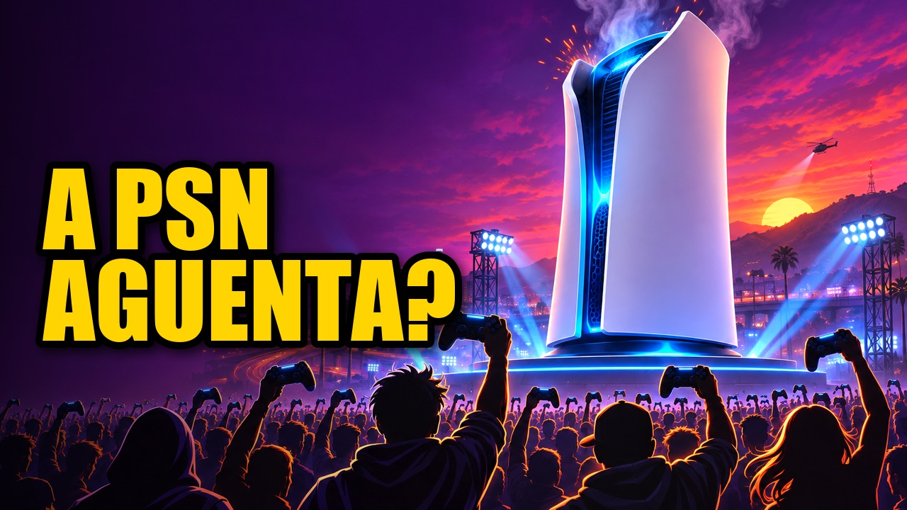

E se 50 milhões abrirem o GTA 6 na mesma hora?
ou: A PSN aguenta o GTA 6? · O dia em que o GTA 6 vai travar a internet
- Duração
- 10–12 min
- Quando
- Postar até 16/11
- Por quê
- Formato livre no Brasil. Lá fora: 194 mil (MrGTA). Console na thumb é o elemento mais forte da amostra (3,1×) e a pergunta na thumb completa o título em vez de repetir.
- Thumb
- Texto na imagem: "A PSN AGUENTA?"
Roteiro em resumo
- [00:00] Gancho
- [00:35] Combinado
- [01:00] O tamanho do problema
- [02:00] A conta do download
- [03:20] O cadeado
- [04:00] Quando a rede caiu
- [05:10] Por que desta vez pode ser diferente
- [06:10] O mapa da madrugada
- [07:20] O que pode dar errado com você
- [08:40] A minha aposta
- [09:15] Fecho
Ver roteiro completo
Antes de gravar
- De onde vêm os fatos do GTA 6: horários de pré-download e de liberação, 212 GB, sem PS4/PC e o código na caixa foram confirmados pela Rockstar e pela Take-Two e reunidos no guia do JTM. A data das análises (18/11) é do insider NateTheHate e não foi confirmada.
- Números históricos (GTA 5, PSN, GTA Online): confira as fontes antes de publicar e mostre o recorte na tela.
- "50 milhões" é hipótese, não número da Rockstar. O roteiro diz isso logo no começo. Ninguém sabe quantas cópias vão abrir no primeiro dia.
- Imagens: trailer oficial, gráfico animado da conta do download, print das páginas oficiais e recorte das notícias de 2011, 2013 e 2014.
Roteiro
[00:00] Gancho
Na quarta-feira, dia 18, às onze e cinquenta e nove da noite, milhões de pessoas vão estar olhando para a mesma tela. Um cadeado. Um minuto depois, o GTA 6 libera no Brasil.
Só que a Nova Zelândia já vai estar jogando há 16 horas. A internet vai estar cheia de spoiler. E o seu console vai ter acabado de baixar 212 gigas.
A pergunta deste vídeo é simples: o que acontece quando o maior lançamento da história dos games abre ao mesmo tempo no mundo inteiro? A PSN aguenta? E o que pode dar errado com você, aí na sua casa?
Tela: contagem regressiva; o cadeado do PlayStation; o mapa-múndi acendendo por fuso.
[00:35] Combinado
Antes de começar, um combinado: tudo que for confirmado eu mostro de onde veio. O que for boato, eu aviso. E o número do título, 50 milhões, é uma hipótese. A Rockstar não disse quantas cópias vendeu na pré-venda. Eu usei esse número porque é uma conta redonda e porque, como você vai ver, nem é exagero.
[01:00] O tamanho do problema
Em 2013, o GTA 5 fez 800 milhões de dólares no primeiro dia e passou de 1 bilhão em três dias. Isso entrou no livro dos recordes como o produto de entretenimento que mais rápido chegou a 1 bilhão. Na época, o jogo vinha em disco. Você comprava, colocava na bandeja e jogava. O servidor quase não importava.
Em 2026, não tem disco. Nem na caixa. Quem comprar a versão física, que chega às lojas no dia 12, recebe um código dentro dela. Tudo, absolutamente tudo, passa pela internet.
E o arquivo é enorme: até 212 gigas, segundo a Rockstar. Para comparar, o GTA 5 de PS4 pedia uns 50.
Tela: barra comparando 50 GB e 212 GB.
[02:00] A conta do download
Vamos fazer a conta que ninguém fez. Se 50 milhões de pessoas baixarem 212 gigas cada uma, dá mais de 10 exabytes. Um exabyte é um bilhão de gigas. É dado suficiente para lotar uns 80 milhões de celulares de 128 gigas.
Por isso existe o pré-download. No PlayStation ele abriu à meia-noite do dia 10; no Xbox, às nove da noite do dia 9, horário de Brasília. São nove dias para espalhar essa montanha de dados. Se todo mundo deixasse para o dia 19, não tinha internet que aguentasse.
E aí vem a parte que importa para você. Com uma internet de 100 mega, 212 gigas levam umas quatro horas e quarenta minutos, se tudo correr perfeito. Com 50 mega, mais de nove horas. Com 300 mega, uma hora e meia. Se você ainda não baixou, o vídeo já pagou o clique: começa agora.
Tela: tabela simples com velocidade e tempo de download.
[03:20] O cadeado
O jogo baixado fica trancado. No PlayStation, ele libera na virada de quarta para quinta, à meia-noite de Brasília. Quando o cadeado abre, o console não baixa o jogo de novo: ele só confere com o servidor se você tem a licença.
Parece pouca coisa. É uma consulta só. Mas multiplica por milhões de pessoas apertando o botão no mesmo minuto. E aqui a história dos games tem um aviso.
[04:00] Quando a rede caiu
Em abril de 2011, a PSN ficou fora do ar por 23 dias depois de uma invasão. Foram 77 milhões de contas afetadas. No Natal de 2014, um grupo derrubou a PSN e a Xbox Live justamente no dia em que milhões de pessoas ligavam o console novo que ganharam de presente.
E em outubro de 2013, o GTA Online estreou e simplesmente não funcionou direito por dias. Personagem sumindo, progresso perdido, fila para entrar. A Rockstar acabou dando dinheiro do jogo para todo mundo como pedido de desculpas.
Nenhum desses casos é igual ao dia 19. Mas eles mostram onde a coisa costuma quebrar: não no download, mas na hora em que todo mundo tenta entrar ao mesmo tempo.
Tela: recortes das notícias de cada caso, com a data.
[05:10] Por que desta vez pode ser diferente
Agora, o outro lado. O GTA 6 não tem online no lançamento. A própria página na loja do PlayStation chama o jogo de experiência de um jogador. Isso muda tudo.
Um jogo de história não precisa de servidor para você jogar. Depois que a licença é conferida, você está em Leonida. Não tem lobby, não tem partida, não tem sessão para cair. O ponto frágil é um só: aquele minuto do cadeado.
E a Sony e a Microsoft sabem disso desde o primeiro trailer. O pré-download com nove dias de antecedência, a caixa com código em vez de disco e a liberação por fuso horário servem justamente para espalhar a fila.
[06:10] O mapa da madrugada
Então como deve ser a noite, na prática? O meu palpite, hora a hora:
Às 8 da manhã do dia 18, horário de Brasília, a Nova Zelândia libera. É o primeiro teste de verdade dos servidores e o começo da enxurrada de vídeo e print.
Durante o dia 18 saem as análises, segundo o NateTheHate. A Rockstar não confirmou.
À meia-noite, o Brasil entra junto com uma faixa enorme das Américas. Se alguma coisa engasgar, é aqui: o cadeado demora, aparece um erro de licença, a loja fica lenta.
E entre meia-noite e meia-noite e meia, a fila se resolve sozinha. Quem já está dentro está jogando offline, e o servidor só cuida de quem acabou de chegar.
Tela: linha do tempo com os horários, com "boato" escrito no da análise.
[07:20] O que pode dar errado com você
Agora, os problemas que eu acho mais prováveis. E nenhum deles é culpa da Sony.
Primeiro, espaço. 212 gigas num PS5 de 825 gigas de fábrica, com o sistema e outros jogos, não fecha para muita gente. Se o pré-download parou no meio, é quase sempre isso.
Segundo, a região. Segundo a Rockstar, no PlayStation o código tem região: conta brasileira, caixa brasileira. Quem comprou caixa importada para conta brasileira pode ter surpresa.
Terceiro, a atualização do dia. Quase todo jogo grande ganha um patch no lançamento. Se ele vier, todo mundo baixa no mesmo minuto, e aí sim a internet aperta.
Quarto, o spoiler. Este é o único que eu tenho certeza que vai acontecer. A Nova Zelândia joga 16 horas antes. Silencia as palavras certas no X e no YouTube no dia 18.
Tela: checklist com os quatro itens.
[08:40] A minha aposta
Se você me perguntar se a PSN cai, eu aposto que não, pelo menos não por muito tempo. O jogo é offline, a fila foi espalhada em nove dias, e as duas empresas tiveram três anos para se preparar.
Mas eu aposto que, por volta da meia-noite e cinco, vai ter muita gente vendo uma mensagem de erro, achando que o mundo acabou, e conseguindo entrar dez minutos depois.
[09:15] Fecho
Então faz o seguinte: confere o espaço hoje, deixa o console no modo de repouso com download ligado e silencia o spoiler no dia 18.
E me fala aqui embaixo: você vai virar a noite do dia 19 ou vai dormir e jogar de manhã? Se a sua resposta foi virar a noite, o próximo vídeo é para você. Eu montei a madrugada do GTA 6 minuto a minuto, do cadeado até a primeira fuga da polícia. Tá aparecendo aqui.